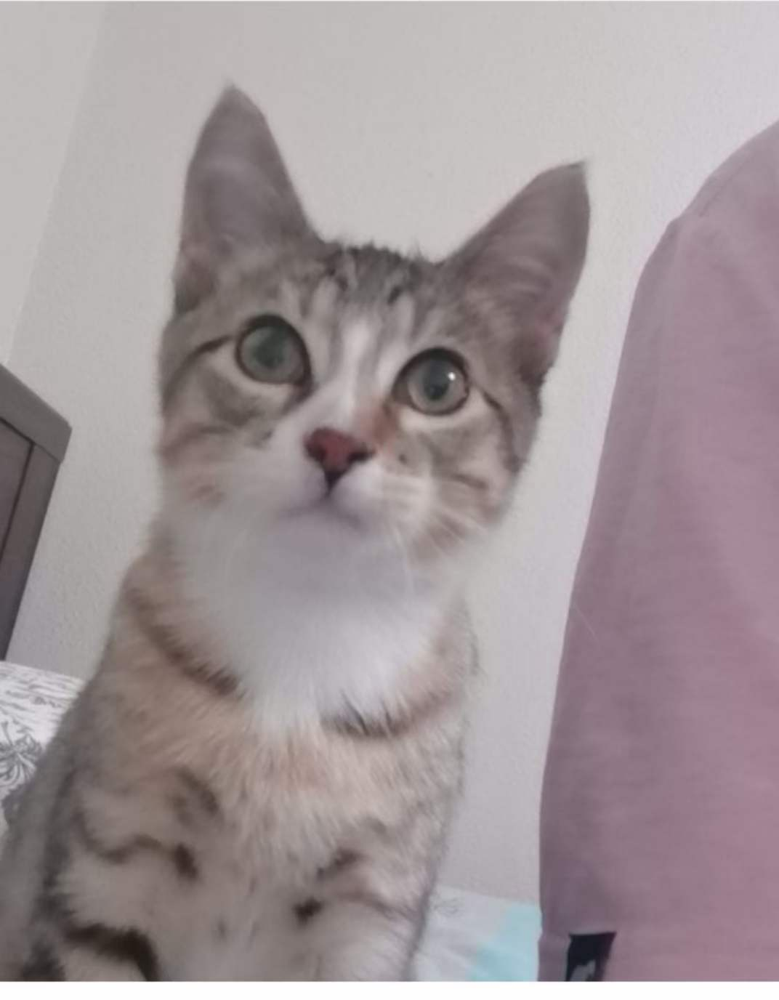

Miumiu

Miumiu is a five-year-old silver gradient British shorthair cat. She was born in Russia and raised in the United States and China. She is a mom of two babies. She loves to sleep.
Miumiu is kind of timid and afraid to meet strangers. But she is very close to her family, she loves to lie next to her family. She is very talkative and loves to meow.
Photo Gallery


Likes
- Chicken breast
- Sleeping
- Observing birds outside the window
Sprout
Sprout, a shy and elusive kitten when he first arrived at four months old, gradually became an affectionate companion. He enjoyed sleeping on my bed, but his early morning wake-up calls at 6:30 AM were a daily routine.
During my challenging academic phase, Sprout became my constant companion during late-night drawing sessions, quietly curling up on my lap, providing comfort and banishing solitude.
Photo Gallery


Likes
- Egg
- Playing with Naer and my tennis string
- Sleeping in the sunshine
Cody

Cody is a 7yr old Pembroke Corgi. He was born in Cavalier Farms, Seattle. He prefers to spend his days lounging on the bean bag. Every day, he enjoys two walks around the neighborhood and likes to make friends with other doggie friends. If lucky enough, he might see the cyclist, but he is not allowed to give chase.
Cody loves traveling. He enjoys walking on the beach and taking sun naps. But he hates cold weather. He would like to stay at home lounging by the fireplace in winter.
Photo Gallery


Likes
- Traveling
- Lounging
- Tennis balls
Peddie

Peddie, the Golden Retriever, is a charming and lively companion known for his beautiful coat and playful nature. He's a perfect partner for outdoor fun, loved for his loyalty and gentle disposition.
Peddie's intelligence and friendly demeanor make him a beloved member of his family and a source of joy for everyone who knows him.
Photo Gallery


Likes
- Swimming
- Running in the park
- Meeting new friends
Sage

Sage is a 3 year old Golden Retriever. She is one of the laziest dogs. She loves sneaking into the bedroom and hopping onto the neatest bed. She also loves riding in a car with the windows open feeling the wind and air. She enjoys walking, only if you take her for a ride to a big arboretum or park. Walking around the neighborhood is not necessarily her cup of tea.
Her favorite food is corn. One day, she stole corn on the cob from the dining table, which was surprising because she is normally gentle and polite. She took the stolen corn to the patio and enjoyed her meal by herself. Unfortunately, the corn turned out to be unripe, so she ended up vomiting it all later.
Photo Gallery


Likes
- Carrot
- Nap
- Big park
Chako

With a coat as dark as midnight but eyes as bright as stars, he seemed to embody both the mystery and the exuberance of life itself. Agile and playful, he danced around the park as if the grass were his personal stage, captivating everyone with his vivacity.
Yet, when at home, Chako transformed into a zen master. He would curl up on his favorite rug, eyes half-closed in contemplation, as if solving the great puzzles of the universe. Both spirited and serene, Mochi was a living testament to the richness of dualities, teaching his human companions that one could be many things all at once.
Photo Gallery


Likes
- Sleep
- Play
- Eat
Juno

No one knows exactly what breed Juno is, but that makes him all the more special. He was adopted before he was one year old; despite this and his German shepherd-esque looks, he stayed close to the same size, hovering around 50 lbs into adulthood. At the weathered age of ten years old, Juno is dealing with hip problems, but manages to stay in good spirits.
One of Juno’s favorite pastimes is finding the dirtiest puddle within a one-mile radius and making sure every inch of him makes contact with said puddle. If rolling around in dirt was an Olympic sport, Juno would have been the one that facilitated its inclusion into the Olympics.
Photo Gallery


Likes
- Human food
- Head pats
- Sleeping